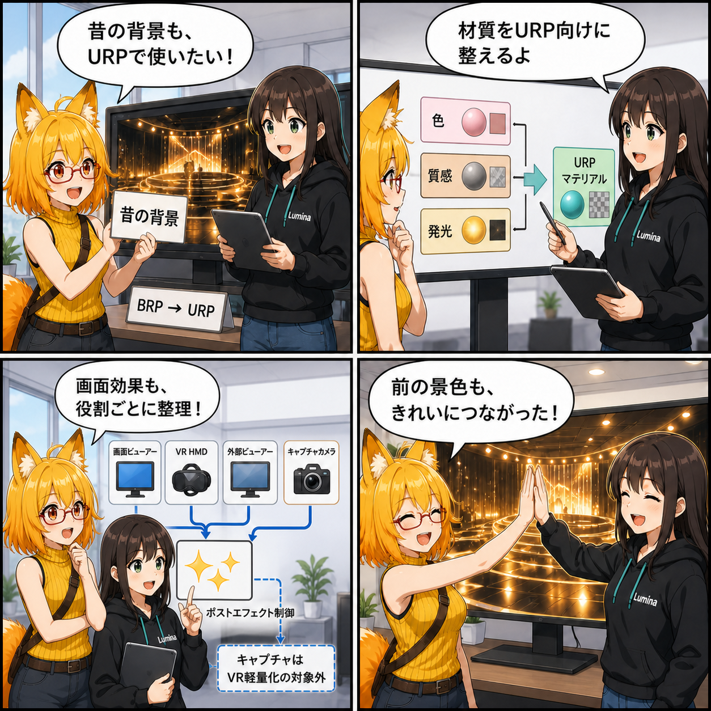

ピンクにしない、迷わせない。URPの画面効果と背景互換を固めた日
2026-08-05 の開発日記では、画面を美しく整える Beautify 3 を現在の描画基盤である URP 専用へ移し、以前の Built-in Render Pipeline（BRP）向け背景素材も自然に表示できる互換処理を中心に取り上げます。描画方式が違っても、背景や発光表現を崩さず、同じスタジオ体験へつなぐための更新です。

集計期間には7コミットが入り、集計終了時点の最終HEADは 93b8179（「デスクトップで物理カメラをマウス操作可能にする」）でした。期間直前のコミットから終了HEADまでの差分は74ファイル、2,859行追加、938行削除です。確認時点でViewer側には未コミット差分がありましたが、今回の記事実績には含めていません。
今日の主題：画面効果をURPの仕組みへ一本化
Beautify 3 は、ブルームや被写界深度、色調整などを扱う画面効果です。今回、Viewer内の連携をURP向けコンポーネントへ移し、旧来のBuilt-in向け制御や従来のURPアダプターを整理しました。
表示用、VRヘッドセット用、外部表示用、撮影用というカメラの役割を分け、それぞれへ必要な状態を適用できる構成になっています。撮影カメラはVR負荷に応じた軽量化の対象から外し、ユーザーが意図した撮影表現を保つ設計です。
5種類の描画設定へ、同じ機能を一度だけ
Viewerには Low、Middle、Ultra、Custom と標準を合わせた5種類のRenderer Dataがあります。BeautifyのRenderer Featureが各設定へちょうど1つずつ入っているかを検査し、不足や重複を見つけられるセットアップとテストが追加されました。
有料アセット本体はリポジトリへ含めず、利用環境へ正しく導入されていることだけを検証します。描画設定を切り替えたときに「ある品質だけ効果が出ない」「二重に適用される」といった差を残さないための土台です。
BRP向け背景を、URPでも自然に再現
過去のUnity素材には、StandardなどBRP向けシェーダーで作られた背景があります。URPでそのまま使うと、対応しないシェーダーや材質設定によって表示が崩れる可能性があります。
今回の互換処理では、元のシェーダー名を診断用の情報として保ちつつ、実行時にはURPで利用できるLitまたはUnlitへ正規化します。メインテクスチャ、色、滑らかさなどのプロパティ名を対応づけ、Opaque・Cutout・Transparentの描画状態もURP向けに整えます。発光テクスチャや発光色、Baked Emissiveの情報も復元し、背景をVBGへ保存して読み直した後まで回帰テストで確認しています。
ほかにも進んだこと
VRのBlendShape一覧では検索と分類更新が差分化され、必要な項目だけを更新する構成になりました。姿勢推定には診断状態と再調整APIが追加されています。
デスクトップ操作では、物理カメラを左ドラッグで移動、右ドラッグで回転できる経路が有効化され、ライトやアバター操作との入力競合も避けるようになりました。ポストエフェクトの役割名とバックエンド表記、Unity Worktreeの検証手順、Cold Start手順も整理されています。
4コマの裏話
今回は、BRPで作られた背景をURPのスタジオへ持ち込む場面から始めます。ルミナが材質をURP向けに整え、画面効果もカメラごとに整理。最後は発光を含む背景と画面効果が同じスタジオで自然にまとまる流れです。
今日のまとめ
2026-08-05の記事対象期間では、Beautify 3の連携をURPへ一本化し、5種類の描画設定へ一貫して組み込む検証が加わりました。同時に、BRP由来の背景材質をURP向けに正規化し、元の情報と発光表現を保ったまま保存・再読込できる互換性を固めています。
描画基盤の移行は、単に新しい機能へ置き換えるだけでは終わりません。過去の素材と現在の画面効果を同じ景色へつなぐことで、ユーザーが描画方式を意識せずスタジオを使える状態へ一歩進みました。
本日のひとこと
パイプラインが変わっても、見せたい景色は変えない。